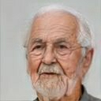
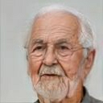

 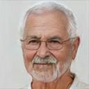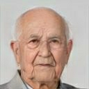
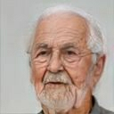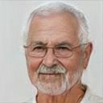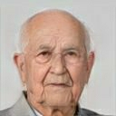
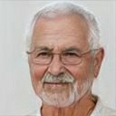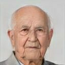
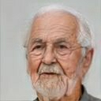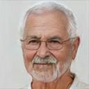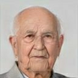
Since the start of the pandemic, covid-19 has killed over 98,000 Americans. This number is completely incomprehensible. So many lives lost in such a short period—it is simply more than anyone can grasp. This website is intended to help readers understand this number by visualizing it in a unique way.
There is no publicly available list of those dead from covid-19, given the important need to protect medical privacy. A monument that names the dead in their entirety, like those created for September 11th and the Vietnam War, is not and will never be possible. Instead, I have created this page as a sort of virtual monument. It is my hope that this page will help visitors to process their grief and provide space for a private, solemn remembrance.
The faces on this page do not and have never existed. They were generated by a computer. The images have been curated by me to provide a demographically representative sample of the actual covid-19 victims, accounting for age, race, and gender. Similarly, the names are selected at random from a prepared list of first and last names. You can read more about the making of this page here.
Still, behind each of these images stands a real human, who was loved, cared for, and missed. Each one contemplated their death as the disease took hold, and their body began to fail. Each one greeted the end with the usual mix of contradictory emotions—grace and fear, denial and acceptance. Most left behind a family, who will carry the loss always. Each was a person. May they rest in peace.